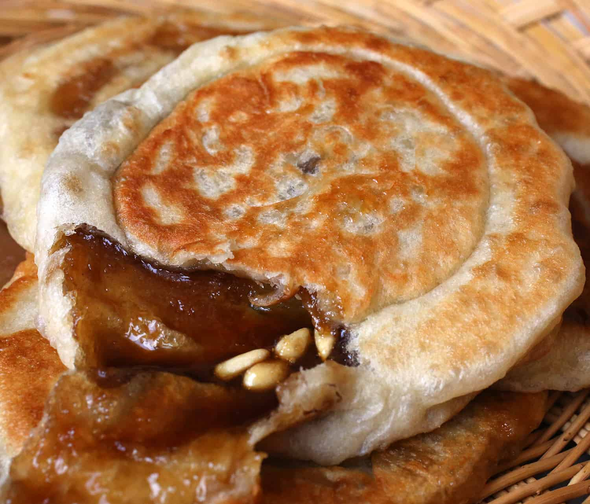

Hotteok

Description
This recipe comes from a friend who recommended this delectable pan fried stuffed pancake! Usually having chopped nuts and melted sugar in the center, Hotteok is a wonderfully comforting sweet treat.
Ingredients
- Water (To desired texture)
- 2 Tbs White Sugar
- 2 Tsp Dry Yeast
- 1/2 Tsp Kosher Salt
- 1 Tbs Vegetable Oil
- 2 1/2 Cups All Purpose Flour
- 1/2 Cup Turbinado Sugar (Brown Sugar also works.)
- 1 Tsp Cinnamon Powder
- 2 Tbs Chopped Walnuts (Or desired nut.)
Steps
Dough
- First, to form our dough; place 1 cup of lukewarmwater into a bowl.
- Add white sugar, salt, yeast, and vegetable oil. Stir well.
- Add 2 cups of all purpose flour, mix (preferably) with a spoon.
- Allow dough to rise for 1 hour, with lid closed.
- After about an hour, the dough should have doubled in size. Knead to degass.
- Let dough rise for another 10-20 minutes.
Filling
- Mix Turbinado or brown sugar and cinnamon together.
Hotteok Production
- Knead dough to degass a third time.
- Dust around 1/2 cup of flour on surface
- Knead dough to develop a little gluten, then divide into eight portions.
- Take 1 dough portion, Flatten it, and add filling to preference in center, forming and sealing the dough to make a ball.
- Repeat until out of dough.
- Heat pan over medium low with a good amount of oil.
- Place ball on pan and wait 30 seconds.
- When dough ball bottom is light golden brown, press firmly with a spatula until it is about the size of a CD.
- Let cook until both sides are golden, or until center sugar has melted into a caramel.
- Cover and let steam if sides are getting too dark.
- Dig in!